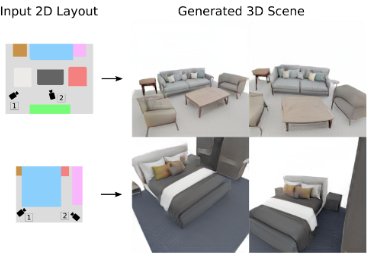
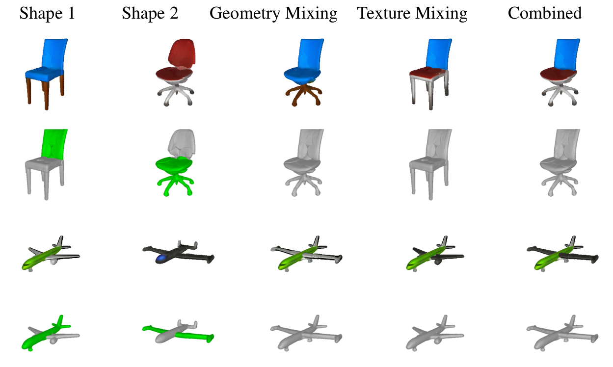
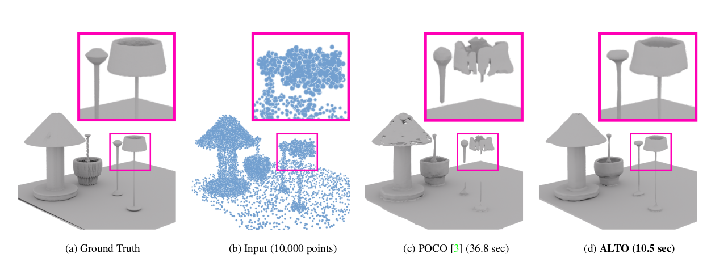

I am Postdoctoral Researcher at Stanford University working with Prof. Leonidas Guibas at the Geometric Computation Group. I did my PhD at the Max Planck ETH Center for Learning Systems , where I worked with Prof. Andreas Geiger and Prof. Luc van Gool. Prior to this, I was an undergraduate in the School of Electrical and Computer Engineering in the Aristotle University of Thessaloniki in Greece, where I worked with Prof. Anastasios Delopoulos and Prof. Christos Diou. During my PhD, I was very lucky to have spent one wonderful year working with Prof. Sanja Fidler at NVIDIA Research, where I worked on 3D Generative AI. Moreover, I also had the pleasure to intern at FAIR under the guidance of Dr. David Novotny and Prof. Andrea Vedaldi, where I worked towards developing 3D-aware representations from videos. I am interested in Computer Vision, particularly in the areas of interpretable shape representations, scene understanding and 3D controllable generative models for objects and scenes.

News
- Feb 2024:Three papers accepted to CVPR 2024! CAD, CurvecloudNet and MultiPhys!
- Jan 2024:I am an Area Chair for ECCV 2024!
- Dec 2023: We are organizing the 1st Workshop on AI for 3D Generation and the 2nd Workshop on Open-Vocabulary 3D Scene Understanding at CVPR@2024 in Seattle!!
- Nov 2023:I am very honored to be one of the EECS Rising Stars 2023!
- Jul 2023: Two papers accepted to ICCV 2023! COPILOT and CC3D!
- Jun 2023: I am an Area Chair for 3DV 2024 and WACV 2024!
- Jun 2023: We are organizing the 1st Workshop on AI for 3D Content Creation at ICCV@2023 in Paris!!
- May 2023: One paper accepted to TMLR 2023!
- May 2023: Received Outstanding Reviewer Award at CVPR 2023!
- Feb 2023: Two papers accepted to CVPR 2023! PartNeRF and ALTO!
- Feb 2023: We are organizing the Second Workshop on Structural and Compositional Learning on 3D Data at CVPR@2023 in Vancouver!!
- May 2022: Received Outstanding Reviewer Award at CVPR 2022!
- Jan 2024:I am an Area Chair for ECCV 2024!
Selected Publications

International Conference on Computer Vision (ICCV), 2023
Abstract Project page Paper Poster Code Bibtex
In this work, we introduce CC3D, a conditional generative model that synthesizes complex 3D scenes conditioned on 2D semantic scene layouts, trained using single-view images. Different from most existing 3D GANs that limit their applicability to aligned single objects, we focus on generating complex scenes with multiple objects, by modeling the compositional nature of 3D scenes. By devising a 2D layoutbased approach for 3D synthesis and implementing a new 3D field representation with a stronger geometric inductive bias, we have created a 3D GAN that is both efficient and of high quality, while allowing for a more controllable generation process. Our evaluations on synthetic 3D-FRONT and real-world KITTI-360 datasets demonstrate that our model generates scenes of improved visual and geometric quality in comparison to previous works.
@InProceedings{Bahmani2023ICCV,
author = {Bahmani, Sherwin and Park, Jeong Joon and Paschalidou, Despoina and Yan, Xingguang and Wetzstein, Gordon and Guibas, Leonidas and Tagliasacchi, Andrea},
title = {CC3D: Layout-Conditioned Generation of Compositional 3D Scenes},
booktitle = {International Conference on Computer Vision (ICCV)}},
year = {2023}
}
Computer Vision and Pattern Recognition (CVPR), 2023
Abstract Project page Paper Poster Slides Code Bibtex
Impressive progress in generative models and implicit representations gave rise to methods that can generate 3D shapes of high quality. However, being able to locally control and edit shapes is another essential property that can unlock several content creation applications. Local control can be achieved with part-aware models, but existing methods require 3D supervision and cannot produce textures. In this work, we devise PartNeRF, a novel part-aware generative model for editable 3D shape synthesis that does not require any explicit 3D supervision. Our model generates objects as a set of locally defined NeRFs, augmented with an affine transformation. This enables several editing operations such as applying transformations on parts, mixing parts from different objects etc. To ensure distinct, manipulable parts we enforce a hard assignment of rays to parts that makes sure that the color of each ray is only determined by a single NeRF. As a result, altering one part does not affect the appearance of the others. Evaluations on various ShapeNet categories demonstrate the ability of our model to generate editable 3D objects of improved fidelity, compared to previous part-based generative approaches that require 3D supervision or models relying on NeRFs.
@InProceedings{Tertikas2023CVPR,
author = {Konstantinos Tertikas and Despoina Paschalidou and Boxiao Pan and Jeong Joon Park and Mikaela Angelina Uy and Ioannis Emiris and Yannis Avrithis and Leonidas Guibas},
title = {PartNeRF: Generating Part-Aware Editable 3D Shapes without 3D Supervision},
booktitle = {Proceedings IEEE Conf. on Computer Vision and Pattern Recognition (CVPR)},
year = {2023}
}
Computer Vision and Pattern Recognition (CVPR), 2023
Abstract Project page Paper Poster Slides Code Video Bibtex
This work introduces alternating latent topologies (ALTO) for high-fidelity reconstruction of implicit 3D surfaces from noisy point clouds. Previous work identifies that the spatial arrangement of latent encodings is important to recover detail. One school of thought is to encode a latent vector for each point (point latents). Another school of thought is to project point latents into a grid (grid latents) which could be a voxel grid or triplane grid. Each school of thought has tradeoffs. Grid latents are coarse and lose high-frequency detail. In contrast, point latents preserve detail. However, point latents are more difficult to decode into a surface, and quality and runtime suffer. In this paper, we propose ALTO to sequentially alternate between geometric representations, before converging to an easy-to-decode latent. We find that this preserves spatial expressiveness and makes decoding lightweight. We validate ALTO on implicit 3D recovery and observe not only a performance improvement over the state-of-the-art, but a runtime improvement of 3-10×.
@InProceedings{Zhen2023CVPR,
title = {ALTO: Alternating Latent Topologies for Implicit 3D Reconstruction},
author = {Wang, Zhen and Zhou, Shijie and Park, Jeong Joon and Paschalidou, Despoina and You, Suya and Wetzstein, Gordon and Guibas, Leonidas and Kadambi, Achuta},
booktitle = {Proceedings IEEE Conf. on Computer Vision and Pattern Recognition (CVPR)},
year = {2023}
}
Advances in Neural Information Processing Systems (NeurIPS), 2021
Abstract Project page Paper Poster Slides Code Video Bibtex
The ability to synthesize realistic and diverse indoor furniture layouts automatically or based on partial input, unlocks many applications, from better interactive 3D tools to data synthesis for training and simulation. In this paper, we present ATISS, a novel autoregressive transformer architecture for creating diverse and plausible synthetic indoor environments, given only the room type and its floor plan. In contrast to prior work, which poses scene synthesis as sequence generation, our model generates rooms as unordered sets of objects. We argue that this formulation is more natural, as it makes ATISS generally useful beyond fully automatic room layout synthesis. For example, the same trained model can be used in interactive applications for general scene completion, partial room re-arrangement with any objects specified by the user, as well as object suggestions for any partial room. To enable this, our model leverages the permutation equivariance of the transformer when conditioning on the partial scene, and is trained to be permutation-invariant across object orderings. Our model is trained end-to-end as an autoregressive generative model using only labeled 3D bounding boxes as supervision. Evaluations on four room types in the 3D-FRONT dataset demonstrate that our model consistently generates plausible room layouts that are more realistic than existing methods. In addition, it has fewer parameters, is simpler to implement and train and runs up to 8x faster than existing methods.
@InProceedings{Paschalidou2021NEURIPS,
author = {Despoina Paschalidou and Amlan Kar and Maria Shugrina and Karsten Kreis and Andreas Geiger and Sanja Fidler},
title = {ATISS: Autoregressive Transformers for Indoor Scene Synthesis},
booktitle = {Advances in Neural Information Processing Systems (NeurIPS)},
year = {2021}
}
Computer Vision and Pattern Recognition (CVPR), 2021
Abstract Project page Paper Poster Code Blog Slides Video Podcast Bibtex
Impressive progress in 3D shape extraction led to representations that can capture object geometries with high fidelity. In parallel, primitive-based methods seek to represent objects as semantically consistent part arrangements. However, due to the simplicity of existing primitive representations, these methods fail to accurately reconstruct 3D shapes using a small number of primitives/parts. We address the trade-off between reconstruction quality and number of parts with Neural Parts, a novel 3D primitive representation that defines primitives using an Invertible Neural Network (INN) which implements homeomorphic mappings between a sphere and the target object. The INN allows us to compute the inverse mapping of the homeomorphism, which in turn, enables the efficient computation of both the implicit surface function of a primitive and its mesh, without any additional post-processing. Our model learns to parse 3D objects into semantically consistent part arrangements without any part-level supervision. Evaluations on ShapeNet, D-FAUST and FreiHAND demonstrate that our primitives can capture complex geometries and thus simultaneously achieve geometrically accurate as well as interpretable reconstructions using an order of magnitude fewer primitives than state-of-the-art shape abstraction methods.
@InProceedings{Paschalidou2021CVPR,
title = {Neural Parts: Learning Expressive 3D Shape Abstractions with Invertible Neural Networks},
author = {Paschalidou, Despoina and Katharopoulos, Angelos and Geiger, Andreas and Fidler, Sanja},
booktitle = {Proceedings IEEE Conf. on Computer Vision and Pattern Recognition (CVPR)},
month = jun,
year = {2021}
}
Computer Vision and Pattern Recognition (CVPR), 2020
Abstract Project page Paper Poster Code Blog Slides Video Bibtex
Humans perceive the 3D world as a set of distinct objects that are characterized by various low-level (geometry, reflectance) and high-level (connectivity, adjacency, symmetry) properties. Recent methods based on convolutional neural networks (CNNs) demonstrated impressive progress in 3D reconstruction, even when using a single 2D image as input. However, the majority of these methods focuses on recovering the local 3D geometry of an object without considering its part-based decomposition or relations between parts. We address this challenging problem by proposing a novel formulation that allows to jointly recover the geometry of a 3D object as a set of primitives as well as their latent hierarchical structure without part-level supervision. Our model recovers the higher level structural decomposition of various objects in the form of a binary tree of primitives, where simple parts are represented with fewer primitives and more complex parts are modeled with more components. Our experiments on the ShapeNet and D-FAUST datasets demonstrate that considering the organization of parts indeed facilitates reasoning about 3D geometry.
@InProceedings{Paschalidou2020CVPR,
title = {Learning Unsupervised Hierarchical Part Decomposition of 3D Objects from a Single RGB Image},
author = {Paschalidou, Despoina and Luc van Gool and Geiger, Andreas},
booktitle = {Proceedings IEEE Conf. on Computer Vision and Pattern Recognition (CVPR)},
month = jun,
year = {2020},
}
Computer Vision and Pattern Recognition (CVPR), 2019
Abstract Project page Paper Poster Code Blog Video Bibtex
Abstracting complex 3D shapes with parsimonious part-based representations has been a long standing goal in computer vision. This paper presents a learning-based solution to this problem which goes beyond the traditional 3D cuboid representation by exploiting superquadrics as atomic elements. We demonstrate that superquadrics lead to more expressive 3D scene parses while being easier to learn than 3D cuboid representations. Moreover, we provide an analytical solution to the Chamfer loss which avoids the need for computational expensive reinforcement learning or iterative prediction. Our model learns to parse 3D objects into consistent superquadric representations without supervision. Results on various ShapeNet categories as well as the SURREAL human body dataset demonstrate the flexibility of our model in capturing fine details and complex poses that could not have been modelled using cuboids.
@InProceedings{Paschalidou2019CVPR,
title = {Superquadrics Revisited: Learning 3D Shape Parsing beyond Cuboids},
author = {Paschalidou, Despoina and Ulusoy, Ali Osman and Geiger, Andreas},
booktitle = {Proceedings IEEE Conf. on Computer Vision and Pattern Recognition (CVPR)},
month = jun,
year = {2019},
}